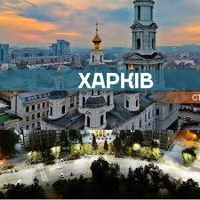

Місто студентів

Харків по праву вважається студентською столицею України. Першими навчальними закладами в місті були Імператорський університет (нині Харківський національний університет імені В. Н. Каразіна), відкритий в 1805 році, і заснований в 1885 році технологічний інститут (нині Національний технічний університет «Харківський політехнічний інститут»).
Багато хто з них, такі як ХАІ (авіаційний), ХПІ (політехнічний), ХАДІ, (автодорожній), є освітніми брендами зі світовим ім'ям, їхні абревіатури не потребують розшифрововування. Спеціалізації ВНЗ найрізноманітніші: від технічних - до аграрних, від військових - до творчих, від медичних - до економічних. У вишах Харкова навчається понад 160 тисяч студентів, у тому числі близько 12 тисяч - іноземних.
Найбільша площа у Європі
Майдан Свободи — серце міста Харкова, де відчуваються неймовірна велич та енергетика міста. Тут розташована й будівля Харківської обласної державної адміністрації, колись відомої як Будинок Рад. Майже 12 гектарів за площею, довжиною до 960 м та шириною до 125 м, цей майдан є найбільшою площею України, 6-ю за величиною в Європі та 12-ю у всьому світі.
Задум проєкту площі з’явився 1919 року, коли під час захоплення влади в Україні більшовики вирішили перенести столицю з Києва до Харкова. Так майбутній майдан із пустки мав перетворитися на символ нової влади та нової епохи.
До архітектурного ансамблю площі входять видатні пам’ятки радянського конструктивізму. Серед них — 13-поверховий Будинок Державної промисловості, побудований у 1926–1928 роках, який є одним із перших хмарочосів у східній Європі й першою будівлею, що зроблена залізобетонним монолітом. Також на майдані розташовані головний та північний корпуси Харківського національного університету ім. Каразіна (побудовані в 1930-х роках) і будівля готелю «Харків» — колишнього готелю «Інтернаціональ» (побудований у 1930-х роках).